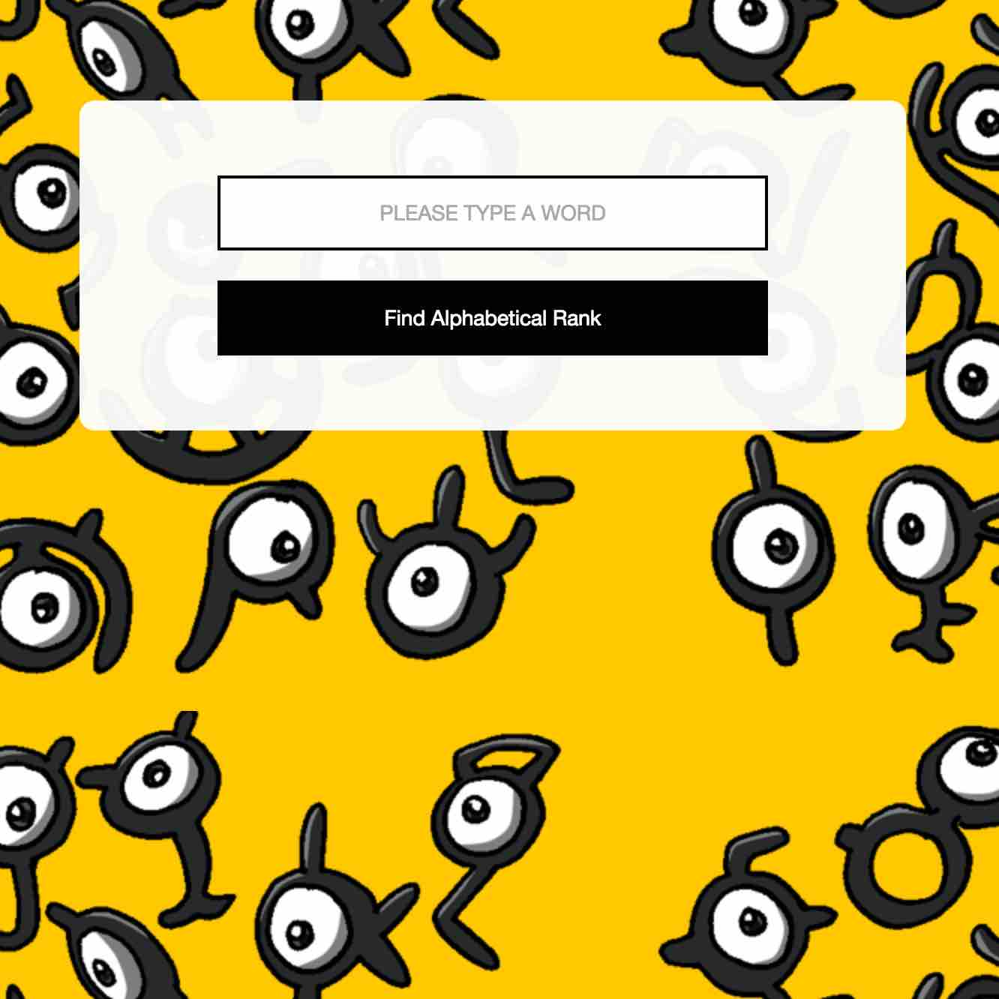
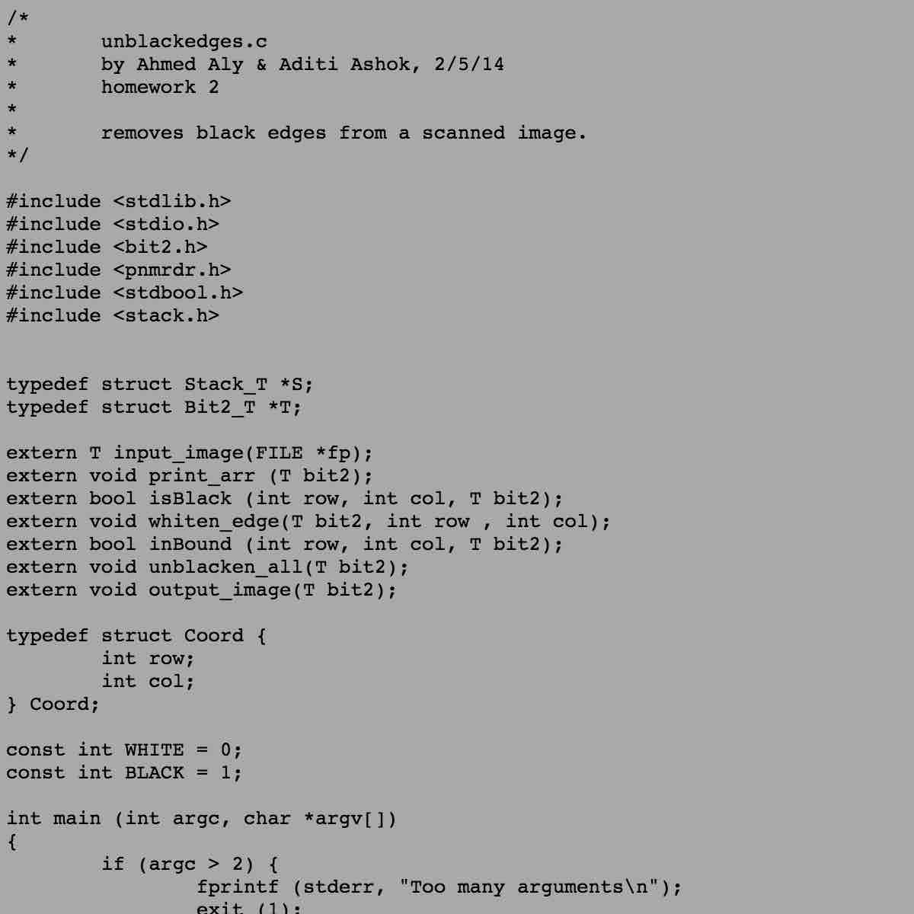

<section class="col-xs-12" id="projects">
	<h1>Projects</h1>
	<div class="project col-md-4">
		<div class="col-xs-12">
			<a href="http://www.eecs.tufts.edu/~aaly01/AR/index.html">
				
			</a>
		</div>
		<div class="col-xs-12">Web app I made to practice angular and a bit of algorithms</div>
	</div>

	<div class="project col-md-4">
		<div class="col-xs-12">
			<a href="../ga.html">
				
			</a>
		</div>
		<div class="col-xs-12">A CSS practice project I worked on that assembles a gameboy color out of simple shapes</div>
	</div>

	<div class="project col-md-4">
		<div class="col-xs-12">
			<a href="../assets/projects/unblackedges.c.txt">
				
			</a>
		</div>
		<div class="col-xs-12">Small project in C I worked on with a friend that takes in a pdf cleans up black edges</div>
	</div>
</section>
<div class="footerSection no-gutter col-xs-12">
	<h2>Contact</h2>
	<p>
		Email - ahmaly01@gmail.com
		<br/>
		Phone - (347) 607-2424
	</p>
	<a class="social" href="https://www.linkedin.com/in/ahmed-aly-68915b81"><i class="fa fa-linkedin"></i></a>
	<a class="social" href="https://github.com/aaly92"><i class="fa fa-github"></i></a>
</div>	